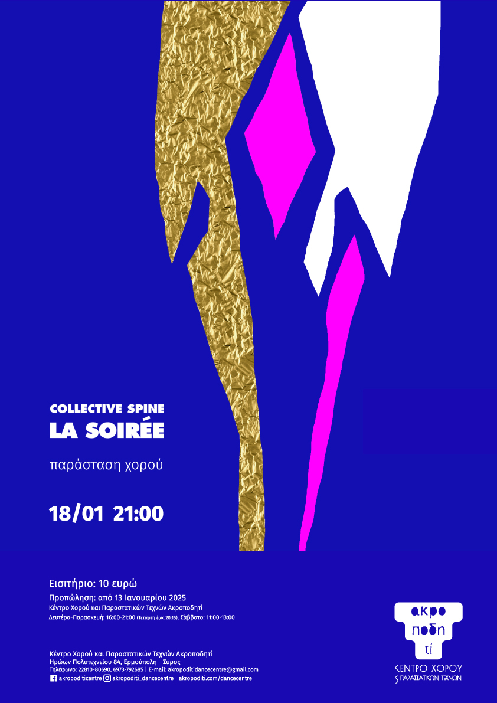
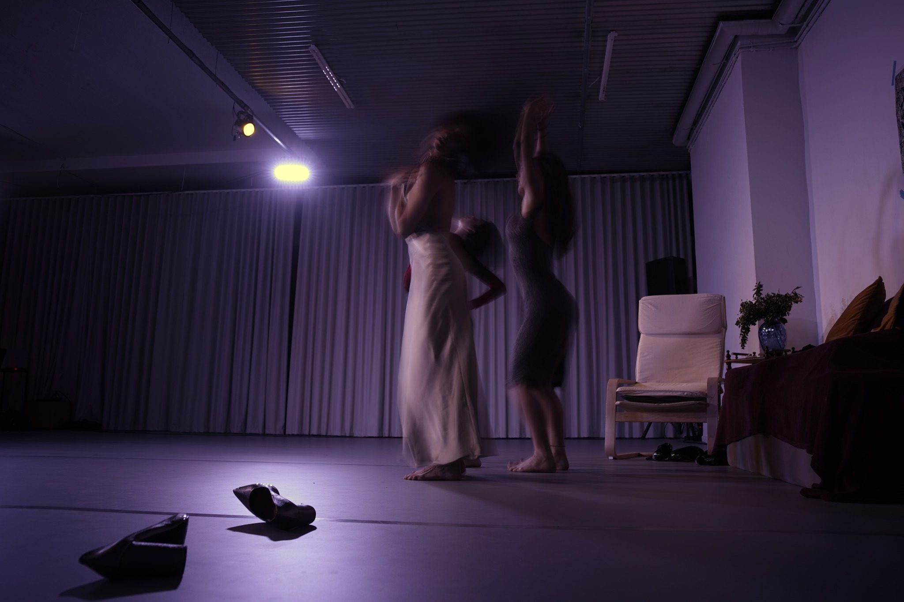
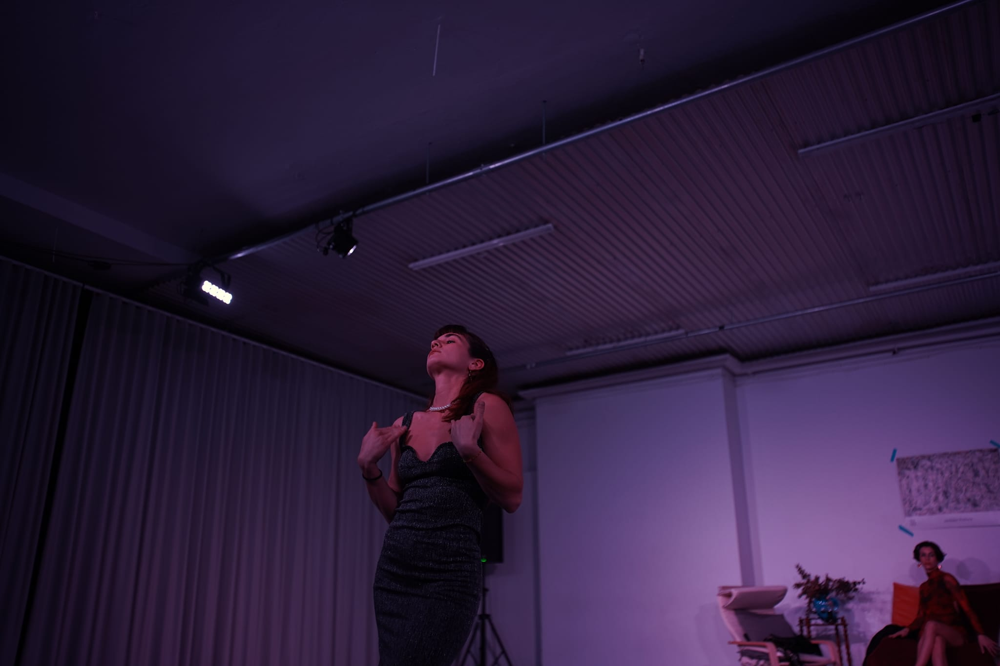

La soiree
Three Greek women from Luxembourg of the 90s–00s meet at a soirée. They socialize and dance beside their warm fireplace. But there is no fireplace, no Central European wealth, no prosperity of the 90s–00s—and we are not our mothers. So what is happening?
Soirée is a dance performance based, on the one hand, on movement research in tsifteteli and zeibekiko while carrying a contemporary dance identity; and, on the other hand, on the conditions of social gathering—party—entertainment.
Credits
Choreographer: Malvina Nikoletta Androni
Dancers / Co-creators: Olga Kalantzi, Annamaria Karounou, Anthie Stasinou
Assistant Choreographer / Lighting: Rafailia Mpampasidou
Music Curation: Malvina Nikoletta Androni
Visual Curation: CVP
Akropoditi, Syros — January 2025
Lithografeion Theatre, Patras — May 2024
M54, Athens — March 2024


